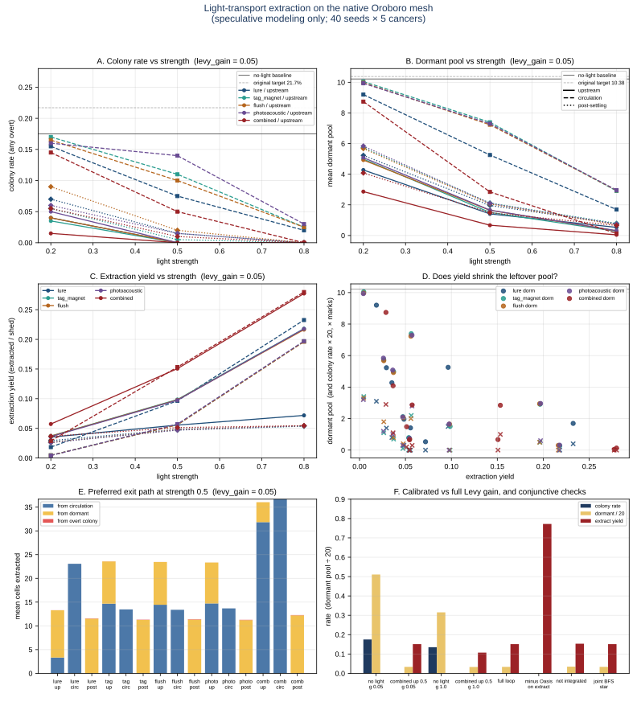

Status: Speculative modeling exercise only. Not a medical treatment, protocol, diagnostic tool, or claim of clinical or biological efficacy. No operational claims. Light is modeled as a directed transport signal that moves occupancy to a collection node on the native polarity mesh, not as a way to kill occupancy in place.
Prepared 27 November 2026 (America/Denver, Mountain Time) on the conjunctive native-mesh metastasis sim in metastasis_native/. Nothing was pushed to GitHub.
The request was to treat light as a way to move cells to an extraction node rather than clear them in place, and to do that using only existing Oroboro components, running in conjunction as one monthly loop. Four mappings were asked for, and used together where they fit the same loop:
The same checks as the native restart and the conjunctive re-score were required: dormant-pool size, colony rate, frustrated loops versus locked edges, upstream versus post-settling effects, plus extraction yield and whether a new preferred exit forms, including whether that exit competes with or destabilizes the circulation ring or the dream-catcher niches.
No new framework was added. The monthly loop is the same one already used for the integrated native restart:
Genesis shed → Parts (state reduction) → Oasis salience → PrinciplesGate → NaCl polarity mesh seating / mesh consensus → Dictator stream → Transcriber → Levy (assesses Transcriber entries) → Nexus registry → damped delta reconciliation (occupancy spike + Levy pulse spike) → homeostasis + Oasis threshold for the next month → dream-catcher niche self-repair → mesh consensus refresh → Genesis closure → loop.
Light is admitted on that loop, not bolted on after recombination:
| Mechanism | Oroboro component | What it actually does in the sim |
|---|---|---|
| Extraction / filter nodes | NaCl polarity mesh, built with the circulation ring and niches | Two new nodes, filter and extract, plus lure, flush, and magnet edges. Consensus (lock vs frustration) is the same opposite-charge rule. |
| Lure | Directed edge + encounter bias, Oasis-gated | Circulating occupancy can be admitted to a lure edge. Upstream, extract competes in the arrest-destination mix with the organs (an admission competitor). During circulation, a residual pull acts on circulating occupancy only. After settling, a directed bias uses flush edges out of the niche. |
| Tag + magnet | Persistent tag flag + magnet / lure / flush edges, Oasis-gated | Eligible occupancy is tagged with probability equal to strength. Only tagged occupancy is pulled. |
| Soft-kill + flush | Documented Levy +4 unfold (exit) + flush edges, Oasis-gated | Seated occupancy first receives the existing origami-unfold pulse (not a second Genesis detach, which would break the shed census). Leaky occupancy is then flushed to the filter. Oasis recycle on an extract proposal is a refused move, not a clearance. |
| Light + sound | Locate flag + Levy +4 extract pulse, Oasis-gated | A locate roll, then a push of located occupancy along lure or flush edges. |
| Combined | All of the above, same month, same loop | A unit of occupancy is extracted at most once. |
| Admission | Oasis commit / buffer / recycle, then PrinciplesGate | The extract path has permissiveness equal to light strength and uses the current damper-raised threshold. |
| Logging | Dictator → Transcriber → Levy → Nexus | Successful moves levy the documented +4 extract weight, recycled from the reawakening / unfold exit pulse — not a new invented constant. |
| Accounting | Census + consensus + pipeline Levy | Extracted occupancy is its own state (EXTRACTED), not CLEARED. Whole-versus-parts reconciliation includes extracted and ev_extract. |
The new Levy kind is recorded in params.json as weight 4. Light defaults to off, so the calibrated no-light baseline is unchanged: a Prostate seed-17000 signature check still matches the pre-light hash 706297f4b752750cad6e2a60c51b360e42b2dc53.
Adding a star of edges from every circulation node into a new filter, and then 2-coloring the whole mesh from Genesis in one BFS, lets the filter become a shortcut. That recodes the ring. On the four-organ Prostate mesh:
| Attachment | Nodes | Edges | Frustrated (start) | Circulation edges frustrated | Niche frustrated | Extract edges frustrated | Inversion holds |
|---|---|---|---|---|---|---|---|
| No extraction branch | 49 | 89 | 32 | 0 / 8 | 32 | — | yes |
| Charge-preserving branch | 51 | 106 | 40 | 0 / 8 | 32 | 8 / 17 | yes |
| Joint-BFS star | 51 | 106 | 44 | 4 / 8 | 36 | 4 / 17 | yes |
Under the charge-preserving attachment (the default for the transport sweep), the Genesis / circulation / niche mesh is 2-colored first. Only the new nodes are then colored from an already-colored neighbor, and process_polarities is applied to the new edges. Existing ring and niche charges do not change. The circulation ring stays fully locked. Half of the lure edges and half of the flush edges are frustrated (4 / 8 each); the magnet edge (filter — extract) is locked. That is the same odd-triangle result one expects when a new hub is joined to an even ring, without letting the hub recolor the ring.
The joint-BFS star is kept as a structural probe. It unlocks 4 of 8 circulation edges and also flips some approach and return edges. Inversion still holds. When the star is present but light strength is zero, colony rate and the dormant pool are identical to the no-branch baseline: the coloring change, by itself, does not move occupancy. Transport runs use the charge-preserving branch so that a change in colonies or the pool can be attributed to directed moves, not to a recoded ring.
Lockable extract edges are preferred. If only frustrated extract edges were available, a move would be allowed only at hop_from_frustrated (0.2), the same hop already used to reseat frustrated niche occupants.
Calibrated baseline is levy_gain = 0.05 (established 1,000-run integrated figures: colony rate 17.5%, dormant pool 10.09, against original targets 21.7% / 10.38). levy_gain = 1.0 is also reported (established 1,000-run figures: 9.1% / 6.36). Every new condition used 40 seeds × 5 cancers (200 runs), the same size as the conjunctive check, so all deltas are taken against this experiment's matched no-light controls at the same 200 runs: 17.5% / 10.22 at gain 0.05, and 13.5% / 6.30 at gain 1.0. The gain-1.0 colony rate in this smaller sample sits above the 1,000-run figure; the dormant pool does not. Comparisons stay inside the matched control.
Timing:
Strengths 0.2, 0.5, and 0.8. Modes: the four mappings plus combined. Light transport runs before monthly clearance, so a directed exit can compete with other fates rather than racing a kill. Additional blocks: mesh-only (branch present, strength 0), key lever interactions (Oasis threshold 0.80, organ permissiveness × 0.4, dorm-clear × 20), and a leave-one-out on combined upstream at strength 0.5, gain 0.05. Whole-versus-parts was consistent on the no-light baseline, on combined and flush, and on the joint-BFS star.
A first flush implementation chose the Levy stream from whether any other occupant in the same Part was a leaky circulating cell, which broke whole-versus-parts. Streams are now fixed by compartment. That was the only non-conjunctive bug found in the light step; it was fixed before the sweep.
All accounting checks passed on every condition: census, event-Levy, colony consensus (current overt = colonize events minus overt-to-extract; heat stays cumulative), pipeline Levy (Dictator / Transcriber / Levy ledger matches the part ledgers), Genesis closure, mesh inversion, and whole-versus-parts.

Mesh-only preserve and mesh-only joint, at both Levy gains, reproduce the matched no-light colony rate and dormant pool exactly. Frustrated-edge counts change by the constant added extract (and, in the joint star, circulation) frustration. Repair counts are unchanged. Adding the node is not, by itself, a treatment.
At gain 0.05, all 45 sweep conditions (5 modes × 3 timings × 3 strengths) reduced both the colony rate and the dormant pool relative to the matched baseline. None reduced only one of them. That is the opposite of a post-settling clearance that leaves a stubborn pool: a directed exit, admitted at the gate, can cut both.
Selected gain-0.05 figures, against a baseline of 17.5% colonies and a dormant pool of 10.22:
| Condition | Colony rate | Dormant pool | Yield (extracted / shed) | From circ / dorm / overt |
|---|---|---|---|---|
| Lure, upstream, 0.5 | 0.0% | 1.41 | 5.6% | 3.3 / 10.0 / 0.01 |
| Lure, circulation, 0.5 | 7.5% | 5.26 | 9.6% | 23.1 / 0 / 0 |
| Lure, post-settling, 0.5 | 1.5% | 1.96 | 4.8% | 0 / 11.5 / 0.06 |
| Tag + magnet, upstream, 0.5 | 0.0% | 1.51 | 9.9% | 14.7 / 8.9 / 0.01 |
| Flush, upstream, 0.5 | 0.0% | 1.65 | 9.8% | 14.4 / 9.0 / 0.01 |
| Flush, post-settling, 0.5 | 2.0% | 2.06 | 4.8% | 0 / 11.3 / 0.08 |
| Photoacoustic, upstream, 0.5 | 0.0% | 1.66 | 9.8% | 14.7 / 8.6 / 0.01 |
| Combined, upstream, 0.5 | 0.0% | 0.67 | 15.1% | 31.8 / 4.2 / 0.01 |
| Combined, circulation, 0.5 | 5.0% | 2.85 | 15.3% | 36.7 / 0 / 0 |
| Combined, post-settling, 0.5 | 1.0% | 1.49 | 5.1% | 0 / 12.2 / 0.07 |
| Combined, upstream, 0.8 | 0.0% | 0.045 | 27.7% | 66.0 / 0.35 / 0 |
| Combined, circulation, 0.8 | 0.0% | 0.13 | 28.0% | 67.0 / 0 / 0 |
The four single mappings at the same timing and strength are close to one another; combined is stronger, as expected from stacking independent marks and edges on the same occupants. Almost no overt-colony occupancy is moved (at most 0.13 mean cells in the whole gain-0.05 sweep). The new exit is not a late raid on locked colonies. It is a path that intercepts occupancy in circulation or pulls it back out of a dormant niche.
A high circulation-only pull intercepts many occupants who were otherwise on a clearance path, so yield can be large while a larger dormant pool remains. Lure at strength 0.8 is the clean comparison: circulation yield is 23.3% with a pool of 1.70, while upstream yield is only 7.2% with a pool of 0.53. Upstream lure competes at the admission gate — the same place the earlier work found was the only lever that shrinks both leftovers — and so spends its moves on occupancy that would otherwise have settled.
Post-settling still shrinks both leftovers, which a pure dorm-clear multiplier does not do as cleanly on colonies, but it leaves more than upstream at the same strength (combined post-settling at 0.8: pool 0.66; combined upstream at 0.8: pool 0.045). A leftover can remain after settling if the directed pull is late. At the strongest upstream combined setting the leftover is almost empty (pool 0.045, a dormant occupant remaining in 4.5% of runs).
Every charge-preserving transport run has zero frustrated circulation edges. Niche frustration changes only through the existing heat-driven repair: when circulation is intercepted hard, seeding heat falls, repair falls, and niche frustration can rise (combined circulation at strength 0.8: mean niche frustrated 31.93, versus 22.52 with no light). The new exit competes with the ring for occupancy; it does not destabilize the ring's locks.
The joint-BFS star does destabilize the ring (4 circulation edges stay frustrated) but, at combined upstream strength 0.5, gives the same colony rate, pool, and yield as the charge-preserving branch (0.0%, 0.67, 15.1%). The recoding is real and should not be ignored as a wiring choice; it was not what moved the leftovers.
Across the 45 gain-0.05 sweep conditions, frustrated-edge count versus dormant pool is Spearman r = 0.09 (95% CI −0.25 to 0.44, p = 0.55), and the niche-only count is the same, because extract-edge frustration is a constant 8 under the preserving branch. The earlier r ≈ −0.82 was measured across the 454 recycled cascade settings, where self-repair unlocked odd loops as the pool shrank. A directed exit shrinks the pool without that repair pattern, and the correlation does not carry over. Extract yield versus the dormant pool is r = −0.68 (95% CI −0.85 to −0.45); yield versus colony rate is r = −0.62 (95% CI −0.80 to −0.37).
Leave-one-out on combined upstream, strength 0.5, gain 0.05:
| Ablation | Colony rate | Dormant pool | Yield |
|---|---|---|---|
| Full conjunctive loop | 0.0% | 0.67 | 15.1% |
| PrinciplesGate off | 0.0% | 0.67 | 15.1% |
| Levy feedback off | 0.0% | 0.69 | 15.3% |
| Damper off | 0.0% | 0.69 | 15.3% |
| Adaptive niche off | 0.0% | 0.67 | 15.1% |
| Loops off (tree niches) | 0.0% | 0.67 | 15.1% |
| Joint-BFS extract star | 0.0% | 0.67 | 15.1% |
integrated=False (pre-integration) | 0.0% | 0.69 | 15.3% |
| Oasis skipped on extract proposals only | 0.0% | 0.025 | 77.2% |
At this calibrated Levy gain the damper is already weak, so turning off Levy feedback, the damper, or the whole integrated pipeline barely moves the light result (the same small shift seen when the no-light baseline is integrated at gain 0.05). PrinciplesGate still does not fire: comfort stays above 0.3 and the unlocked-edge fraction stays below 0.6, even with the new frustrated extract edges (40 / 106 ≈ 0.38). Odd-loop niches are not required for the extract path to function (the tree ablation keeps the yield).
What is load-bearing is Oasis admission on the extract proposal itself. Skipping that gate yanks 184.5 mean occupants to collection (77% of shed) and leaves a pool of 0.025. With the gate, only 36.0 are moved (15%). Buffer and recycle are refused moves, not kills; they are what keep the new path from becoming an ungated drain. That is the conjunctive result: the same salience threshold that rations organ admission also rations the exit.
Recycling the settled levers at gain 0.05:
Against the matched gain-1.0 control (13.5% / 6.30), combined upstream at strength 0.5 goes to 0.0% colonies, a pool of 0.66, and yield 10.7%. Combined circulation at strength 0.8 reaches yield 21.5% with a pool of 0.12. The stronger Levy-damper coupling already lowers the no-light leftovers; the directed exit still shrinks both, and Oasis still rations the path.
Used in conjunction, on every transport run unless an ablation turned one piece off:
Not conjunctive, and reported as such:
levy_gain = 0.05, Levy-to-damper feedback is only weakly load-bearing for the light effect (leave-one-out almost matches the full loop). It is stronger in the gain-1.0 no-light baseline, which is why that baseline was reported too.oroboro-core.js Dictator class is still absent from the public GitHub tree; the in-sim Dictator used here is the same one already used for the integrated native restart.This is a mesh-and-gate model of occupancy. It is not evidence that light, magnets, or photoacoustics move or extract biological cells. No dose, wavelength, safety, or clinical claim follows from the yields above.
Inside the model, the residual after ordinary post-settling clearance was never a thing that only a kill could touch. A directed, Oasis-gated exit, especially when it competes at admission, shrinks both the colony rate and the dormant pool, and it does so without unlocking the circulation ring — provided the extract branch is colored so that it cannot recode the ring. The leftover can still survive a late (post-settling) pull. The gate that makes the exit safe to attach is the same gate that, if tightened globally, also starves the exit.
Suggested next steps, still only with these components:
Paths are relative to research/metastasis-native/ in this repo.
oro_native.py, oro_mesh.py, params.jsonrun_light_transport.pydata/light_transport/light_transport_summaries.csv, light_transport_ledger.jsoncharts/fig_light_transport.svg (also charts/fig_light_transport.png and .svg)notes/Light_Transport_Extraction.md and .pdf